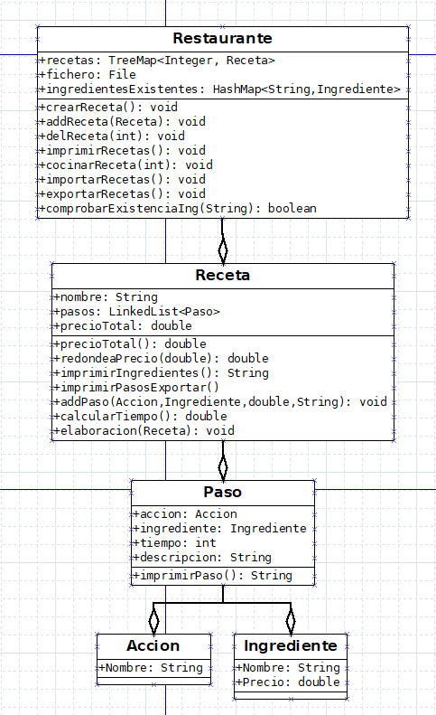
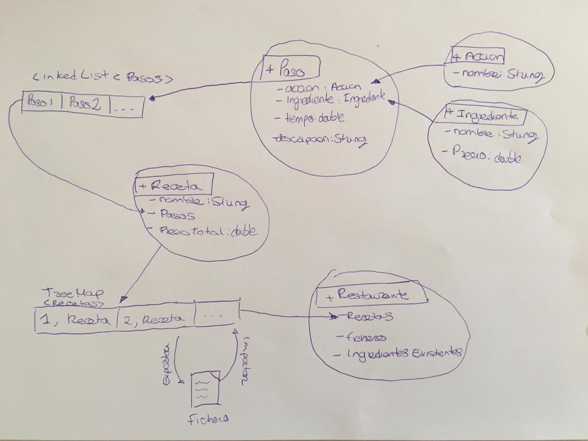

Presentación
Nombre del proyecto: Burgers
Nombre del autor: Daniel Campos Tello
Curso: DAM1
Año: 2022


Nombre del proyecto: Burgers
Nombre del autor: Daniel Campos Tello
Curso: DAM1
Año: 2022
El proyecto se basa en una gestión de recetas, permitiendo añadir y borrar.
Ademas se ha implementado el poder almacenar la información de la aplicación en un fichero de texto, para usarlo a modo de base de datos. Esto nos permite tener cargado desde una primera ejecución las recetas necesarias, sin necesidad de tenerlas declaradas en el main.
Se han hecho uso de diferentes colecciones, listas(LinkedList), conjuntos(hashSet,LinkedHashSet) y mapas(TreeMap y hashMap).
La idea principal es añadir una serie de recetas a una coleccion(treeMap), las recetas se componen de Pasos y estos a su vez se componen de Acciones sobre Ingredientes.
La clase Restaurante es la encargada de almacenar las Recetas, lo hace ayudandose de un TreeMap. La parte mas destacable de esta clase seria la capacidad de crear recetas, imprimir las recetas y ademas el poder importar y/o exportar esas recetas a un fichero .txt nuevo. Como atributos cuenta con la coleccion del tipo HashMap y otro del tipo File.
Ademas se ha añadido la funcionalidad de almacenar los Ingredientes en una coleccion del tipo hashMap, para que una vez queramos crear una receta nueva, a la hora de preguntar al usuario por los ingredientes la aplicación comprobara si existe ese ingrediente, si no lo esta creara uno nuevo y lo añadira a la colección.
Este metodo nos permite, a traves de un menu generado con JOptionPane ir añadiendo ingredientes a la colección. Ademas se comprobara si existe ese ingrediente en alguna de las recetas almacenadas, si existe, recopilara la información de ese ingrediente ya existente evitando asi tener ingredientes duplicados.
Es el encargado de imprimir los Pasos a seguir para cocinar la receta.
Este metodo recibe un boolean como parametro para indicar internamente, si queremos guardar o no el contenido de la colección en un fichero aparte. Con la ayuda de las clases FileReader y PrintWriter, recorremos la colección e imprimimos linea a linea en el fichero. La idea de estos dos metodos es la de transformar el contenido de un objeto para almacenarlo o recogerlo desde el fichero.
Al contrario que el metodo anterior, este es el encargado de recoger la información del fichero, en este caso se han usado las clases FileReader y BufferedReader para realizar el trabajo. Nuevamente lo que se consigue es recogere un String y manipularlo en cada iteración del bucle para posteriormente almacenarlo en variables separadas y con la ayuda del constructor de la clase Receta se instancia un objeto de dicha clase y por ultimo se almacena en la colección.
La clase receta almacena la informacion referente a cada receta, cuenta con un nombre, un LinkedHashSet para los Pasos y por ultimo un precio total. Cuenta con 3 constructores, uno completo, otro vacio y por ultimo otro al que le pasamos un solo parametro, el nombre. Ademas esta clase cuenta con unos metodos que se usan de forma interna y estan destinados para darle formato a un string que se usara posteriormente para la importación/exportación.
Calculara el precio de la receta sumando el precio de todos los ingredientes que la componen.
Basicamente construye un string con todos los ingredientes.
Al igual que precioTotal() este metodo se encarga de calcular el tiempo estimado que tarda en hacerse una receta. Se calcula a partir del tiempo que lleva cada paso.
recorre los pasos para imprimirlos uno a uno.
La siguiente clase es la encargada de guardar información referente a los pasos, se compone de Ingrediente, Accion, tiempo y descripción.
Esta clase sirve para almacenar en forma de String la accion a realizar sobre los ingredientes.
La clase Ingrediente esta destinada para almacenar la información de los ingredientes.
El main del programa, basicamente cuenta con un menu de opciones.